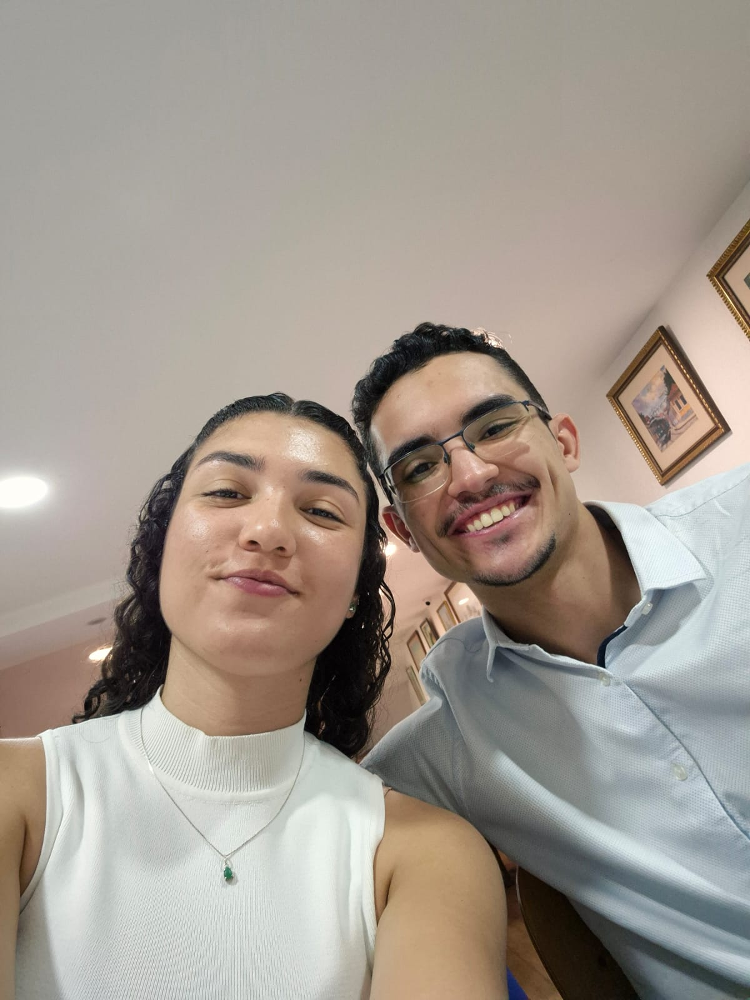
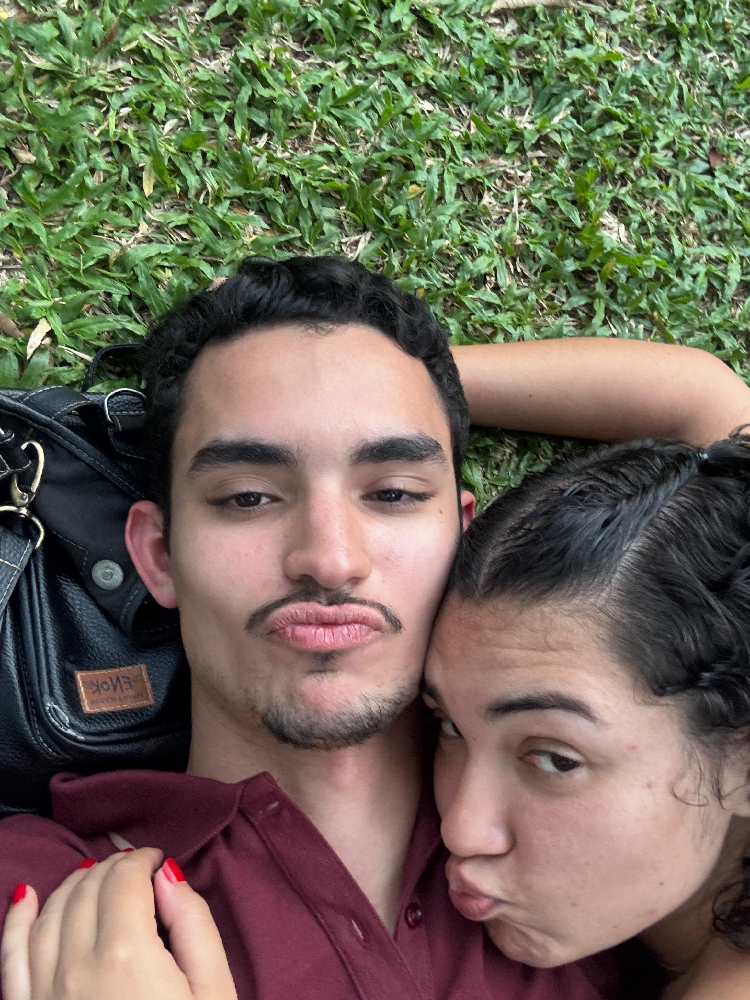
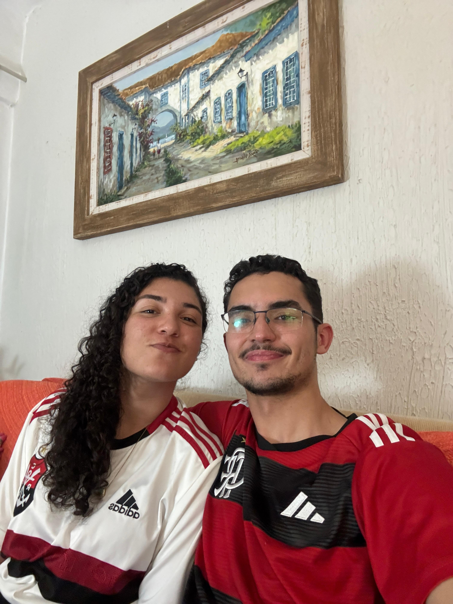
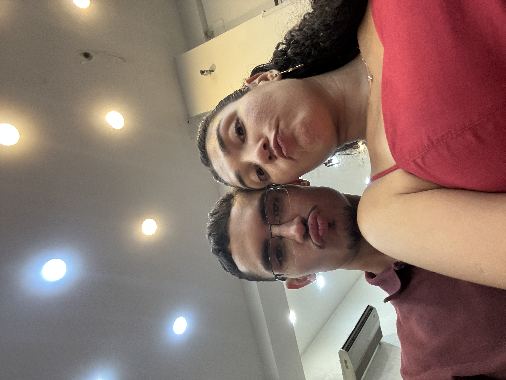
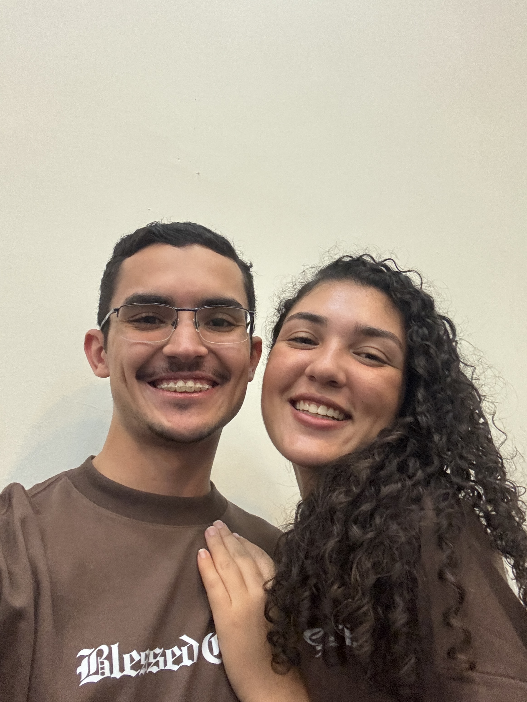

Coisas que eu amo em você
O que me faz te escolher
todo dia
🙏 A forma como você busca a Deus e vive como verdadeira serva d'Ele
✨ Seu sorriso que ilumina qualquer lugar e me desmonta sempre
💛 Seu jeitinho amável e carinhoso, que só você tem
🤍 Como você trata as pessoas com tanta gentileza e respeito
🫂 Seu abraço que vira meu dia completamente
👁️ Seu olhar que fala mais do que mil palavras
🕊️ O quanto você me traz paz, leveza e vontade de ser melhor
💖 Seu coração tão lindo, puro e cheio de bondade
Nossas memórias
Fotos que eu
mais amo 📸







Nossas mensagens
Cada mês,
uma carta
✦ Nosso primeiro dia
Hoje foi um dia especial, cheio de significado… e agora "recomeça" a nossa história de verdade, escrita por Deus, com amor, fé e muito carinho.
Que a nossa caminhada juntos nos leve cada vez mais para perto d'Ele e um do outro. E sim… que sejamos os primeiros e os últimos, os únicos e eternos um na vida do outro. ☺️
Você me faz tão bem… e aquela cantada do Benjamin foi quase perfeita, só faltou encaixar de prima, mas deu nariz com nariz, faz parte kkkkkkkkkkkk
Que Deus nos abençoe, nos guie e nos fortaleça todos os dias. Durma com Ele, nos braços da paz e do amor mais puro… Beijinhos 😘😘
✦ Nosso 1º Mês
É bom demais estar contigo, dividir os dias, as risadas, os silêncios… e sentir que a gente se escolhe todo dia.
Claro que tem que ter a opção de sair, eu já me cansei de jogo com só duas jogadas; se não dá pra sair, vira loop infinito e ninguém merece kkkkkkkkk
Mas, enquanto a vontade for ficar, vamos ficando, cuidando, crescendo.
Eu tava pensando em te ver hoje, mas com essa chuva vai ficar difícil kkkkkk mas que você tenha uma boa aula hoje, amor. Que seja leve, produtiva, e que seu dia termine ainda melhor do que começou ❤️❤️
✦ Nosso 2º Mês
Esses 2 meses ao seu lado têm sido incríveis, leves, intensos e cheios de aprendizados.
É surreal como parece que estamos juntos há bem mais tempo, e mesmo com os dias corridos, cansativos ou cheios de imprevistos, a gente tem conseguido manter esse laço, essa conexão… E isso só mostra o quanto vale a pena.
Sou muito grato por tudo o que estamos construindo, pela forma como você me apoia, como se entrega e como busca crescer, em tudo, inclusive com Deus.
É exatamente isso que eu quero: escolher você todo dia, continuar buscando a Deus em primeiro lugar, e fazer com que cada novo mês seja ainda mais especial que o anterior.
Te amoooo muito, minha princesa ❤️❤️
Que venham muitos outros meses ao seu lado!
✦ Nosso 3º Mês
Exatamente como vc disse, as coisas passaram muito rápido, e é incrível como cada um tomou posse, e ocupa um espaço tão grande na vida do outro em tão pouco tempo, como se fosse há muito tempo!
Todo dia agradeço por termos dado início a esse relacionamento, vc n tem ideia do impacto q vc fez sobre a minha vida, melhorou a minha autoestima, me deixou mais confiante, me ajuda a perseguir as minhas metas e objetivos…
E a melhor parte, a pessoa com quem me relaciono, é uma mulher de Deus, serva, amável, inteligente, determinada, exemplo, carinhosa, gatíssima, futura marombinha….
Não existe coisa melhor do que estar em um relacionamento em que ambos colocam Deus à frente de tudo, não importa oq aconteça!!! Cada dia que passa, tenho mais certeza q fiz a escolha certa!!! ❤️❤️❤️
Ps: Você dispensa comentários, sempre mtt linda, e cada vez mais cheia de muque agr kkkkkkkkkk só falta aparecer menos vezes com a blusa do zé gotinha kkkkkkkk
✦ Nosso 4º Mês
Eu também só tenho a agradecer a Deus por cada dia ao seu lado e por esses 4 meses tão especiais que Ele tem nos dado 🙏 Você é um presente incrível e me sinto muito abençoado por poder caminhar contigo, sempre colocando Cristo no centro.
O tempo realmente voou, mas é porque nosso relacionamento é leve, sincero e cheio da presença de Deus. Obrigado por ser tão companheira, por me apoiar e me motivar, você é uma das maiores respostas de oração da minha vida!
Que nosso amor continue florescendo em Cristo, que Ele nos guarde, nos fortaleça e nos faça crescer juntos cada vez mais.
Dorme bem, minha princesa linda ❤️ Eu te amo demaaaais ❤️❤️❤️❤️
Bjssss e até amanhã 😘😘😘
✦ Nosso 5º Mês
Cinco meses. Só de pensar já bate um sorriso diferente. Não é só o tempo, é tudo que a gente viveu dentro dele: conversas que duraram até tarde, momentos simples que ficaram guardados, desafios que a gente enfrentou junto e, mesmo assim, aqui estamos.
Você é especial de um jeito que é difícil de colocar em palavras. Mas eu vejo em tudo: na forma como você cuida, como você ama, como você busca crescer. Você me inspira todos os dias.
Que Deus continue sendo o nosso fundamento, que a nossa história continue sendo escrita com fé e amor, e que cada mês seja ainda mais bonito que o anterior.
Te amo, minha princesa ❤️
✦ Nosso 6º Mês
Seis meses de escolhas, de aprendizado, de afeto e de cumplicidade. Tem momentos que eu paro e só agradeço a Deus por ter colocado você na minha vida.
Você não é perfeita — e ainda bem, porque eu também não sou. Mas o que a gente tem é real, é bonito, é construído com cuidado. E isso vale muito.
Que a gente continue assim: crescendo, corrigindo o que precisa, celebrando o que tem, e sempre colocando Deus no centro de tudo.
Feliz 6 meses, meu amor. Te amo muito. ❤️
✦ Nosso 7º Mês — Feliz Natal
Hoje a gente comemora mais um mês juntos — e ainda em clima de Natal. Que presente duplo! 🥹
Sete meses de uma história que tem sido construída com amor, fé, respeito e cumplicidade. Tem muita coisa pra agradecer: os momentos simples, as risadas, os silêncios que falam mais do que palavras, e até os desafios que nos fortaleceram.
Que Deus continue sendo o centro da nossa história, nos guiando com amor, respeito e propósito. Eu escolho você todos os dias, com alegria, cuidado e verdade.
Feliz nosso dia e feliz Natal, meu amor ❤️❤️❤️❤️❤️❤️❤️
Você é um presente que eu agradeço a Deus todos os dias!
Ps: Um coração pra cada mês kkkkkkkkkk
✦ Nosso 8º Mês
Feliz aniversário de namoro pra nós. Hoje eu só consigo agradecer a Deus pela nossa história e por tudo o que Ele tem construído entre nós. Nosso relacionamento não é feito só de momentos felizes, mas de escolhas diárias, de cuidado, de aprendizado e de crescimento.
Eu valorizo muito o fato de você caminhar comigo de verdade. Você esteve presente nos dias bons, celebrando comigo, e também nos dias difíceis, quando nada parecia simples. Ter alguém ao meu lado que não foge das lutas, que permanece e acredita, faz toda a diferença.
Sou grato porque a gente cresce junto. Cresce na fé, no caráter, na maturidade e no amor. Você me incentiva a ser melhor, e eu levo isso comigo.
Que Deus continue sendo o centro de tudo o que somos e construímos. Meu desejo é seguir caminhando ao seu lado, cuidando do que temos e honrando essa história que Deus nos confiou.
Feliz nosso dia. Que venham muitos outros, com mais fé, mais maturidade e mais amor.
Te amo ❤️🙏
✦ Nosso 9º Mês
Ontem tivemos uma conversa importante, daquelas que exigem sinceridade, respeito e cuidado. Conversamos com calma, com amor e com maturidade, e isso só confirmou o quanto o nosso relacionamento é construído sobre confiança e verdade.
Nove meses depois, eu continuo escolhendo você. Escolhendo caminhar ao seu lado, construir algo saudável, firme e guiado por Deus. Que o nosso amor continue sendo lugar de diálogo, respeito, paciência e cuidado, sempre com Ele no centro.
Feliz 9 meses, meu amor. Que venham muitos outros, com Deus nos guiando em cada passo ❤️
Te amo ❤️🙏
✦ Nosso 10º Mês
Hoje a gente completa 10 meses de nós. 10 meses de uma história que não é perfeita, mas é real, é construída todos os dias e, acima de tudo, guiada por Deus.
E é até engraçado… porque hoje foi um daqueles dias em que a gente quase nem conseguiu se falar direito, cada um ocupado com suas responsabilidades. Mas, ao mesmo tempo, isso só me faz perceber ainda mais a força do que a gente tem.
Porque o nosso amor não depende só de estar conversando toda hora, mas da certeza. Certeza de quem somos, do que construímos e do quanto escolhemos um ao outro todos os dias.
Você continua sendo uma das maiores respostas de oração da minha vida. Sua forma de amar, de cuidar, de buscar a Deus e de se posicionar me inspira de verdade.
E se tem uma coisa que esses 10 meses me ensinaram, é que amar você é uma decisão que eu tomo com convicção. Não só nos dias leves, mas principalmente nos dias corridos, silenciosos… como hoje.
Mesmo sem falar tanto hoje, você esteve nos meus pensamentos o tempo todo.
Feliz 10 meses, meu amor ❤️
Eu continuo escolhendo você. Hoje, amanhã e todos os dias.
Te amo ❤️🙏
✦ Nosso 11º Mês
11 meses.
E, sendo bem sincero, esse último mês marcou a gente de um jeito diferente.
Não foi só sobre momentos bons, mas sobre decisões, posicionamento e crescimento. Tivemos conversas difíceis, necessárias… daquelas que não são fáceis de ter, mas que mostram o quanto a gente leva a sério o que estamos construindo.
E eu admiro muito isso em nós.
Porque, no final, a gente não escolheu o caminho mais fácil, a gente escolheu o certo.
Eu sei que não foi simples pra você, e também não foi pra mim. Mas o que mais me marcou foi ver que, mesmo com tudo isso, a gente permaneceu, se alinhou e decidiu caminhar junto da forma certa, colocando Deus no centro de verdade, não só nas palavras.
Isso me dá paz. Me dá segurança. Me dá ainda mais certeza sobre nós.
Eu também quero que você saiba que eu valorizo muito a confiança entre a gente. Poder ser verdadeiro, se abrir e saber que estamos construindo um lugar seguro um pro outro faz toda diferença pra mim.
E sobre você… de verdade: eu te acho cada vez mais linda. Em tudo. No seu jeito, na sua essência, na forma como você se posiciona, na mulher que você está se tornando. Isso só me faz te admirar ainda mais a cada dia 🥰
Eu sou muito grato a Deus pela sua vida e por tudo que estamos vivendo. E mais ainda por saber que estamos escolhendo viver isso da maneira certa, com propósito.
E eu acredito que tudo isso que a gente decidiu viver tem direção, tem fundamento… e isso me lembra muito o versículo logo abaixo.
Feliz 11 meses, meu amor.
Eu continuo escolhendo você. Com mais consciência, mais maturidade e mais propósito.
Te amo ❤️
Nossa história completa
24 de Maio de 2025 → 24 de Maio de 2026
"Doze meses, um coração."
Nossas cartas de aniversário
Um ano de
escolhas e amor
✦ Carta I — 24 de Maio de 2026
Um ano. 365 dias. E olhando pra trás, o que mais me surpreende não é o tempo que passou, mas tudo o que Deus construiu dentro dele.
Quando penso no nosso primeiro dia, lembro da emoção, do nariz com nariz, da leveza daquele começo. E hoje, aqui estamos, com uma história que já passou por alegrias profundas, por conversas difíceis, por noites de chuva que não deixaram a gente se ver, por meses corridos onde mal deu pra falar… e ainda assim, aqui estamos. Inteiros. Mais firmes. Mais certos.
Eu te escolhi no primeiro dia sem saber muito o que viria. Hoje eu te escolho sabendo tudo que você é, sabendo das dificuldades que o caminho traz e sabendo que, ainda assim, quero continuar caminhando ao seu lado.
Você não é só a pessoa que eu amo. Você é prova de que Deus responde oração. Você é a mulher que me inspira a ser melhor, a buscar a Deus com mais seriedade, a encarar a vida com mais propósito. Cada mês que passou, eu vi você crescer, e crescer com você foi uma das maiores honras da minha vida.
Lembro das nossas conversas verdadeiras, das que exigiram coragem e maturidade, das que nos alinharam e nos aproximaram de Deus ao mesmo tempo. Lembro do seu abraço, do seu olhar, do seu sorriso que ainda me desmonta do mesmo jeito que no começo. Lembro dos dias em que a vida ficou pesada, e você estava lá, não fugindo, mas ficando.
É muito raro encontrar alguém que permanece. Você permanece.
Hoje eu não quero só comemorar um ano. Quero agradecer a Deus por ter me dado o privilégio de caminhar com uma mulher que O busca de verdade, que ama com cuidado, que se posiciona com coragem e que enche a minha vida de significado só de existir nela.
Nossa história não é perfeita, mas é real. É guiada. É construída sobre o fundamento certo. E isso é o que mais importa.
Obrigado por cada mês. Por cada conversa. Por cada escolha de ficar. Por ser quem você é, e por me deixar ser parte da sua vida.
Eu te amo hoje mais do que no início. E quero continuar crescendo nesse amor, com você, em Cristo, por muito tempo ainda.
Feliz 1 ano, minha princesa. ❤️
"Porque eu, o Senhor, teu Deus, te sustento pela minha mão direita e te digo: Não temas, pois eu te ajudo." — Isaías 41:13
✦ Carta II — 24 de Maio de 2026
Se na primeira carta eu falei sobre o que Deus construiu no nosso tempo juntos, nessa eu quero falar sobre você. Só você.
Tem coisas em você que eu não sei explicar com precisão, mas que eu sinto com clareza. A forma como você cuida, não de um jeito performático, não pra ser vista, mas de um jeito silencioso, constante, verdadeiro. Você cuida porque é quem você é. E isso, pra mim, vale mais do que qualquer palavra bonita.
Nesse um ano, eu aprendi a te ler. Aprendi o que significa o seu silêncio, o que quer dizer quando você sorri de um jeito específico, o que você precisa quando o dia pesa. E cada vez que eu descobri um pedaço novo de você, eu entendi por que Deus foi tão cuidadoso ao te colocar na minha vida.
Você não entrou aqui pra preencher um espaço vazio. Você entrou pra me mostrar como amar de verdade exige crescimento. E eu cresci. Cresci na fé, cresci no caráter, cresci como homem, e grande parte disso tem a sua impressão digital.
Tivemos momentos que exigiram muito da gente. Conversas que não eram fáceis de ter. Decisões que exigiram maturidade antes do prazo. Dias em que a vida não colaborou, e mesmo assim a gente não desistiu. Eu preciso que você saiba: eu não fico por obrigação, por costume ou por medo de recomeçar. Eu fico porque você é a escolha mais consciente que eu já fiz.
E quando penso no futuro, não penso em planos abstratos. Penso em você. Penso na nossa história continuando a ser escrita com a mesma seriedade com que começou. Penso nos dois crescendo juntos, errando, corrigindo, evoluindo, sempre com Deus no centro e sempre com a honestidade que nos define.
Eu não sei tudo que vem pela frente. Mas sei com quem eu quero enfrentar.
Feliz 1 ano, meu amor. Obrigado por ser real, por ser firme, por ser você. ❤️
"Dois são melhores do que um, porque têm melhor paga do seu trabalho." — Eclesiastes 4:9
Com muito carinho e amor,
Matheus ❤️